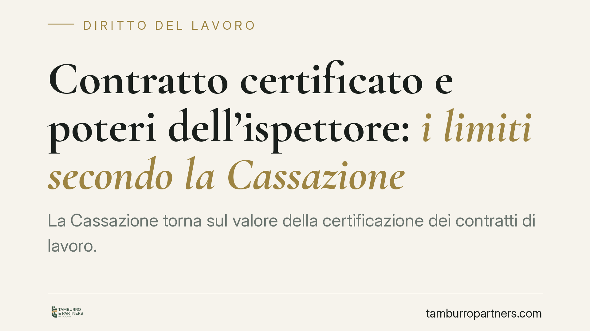

Contratto certificato e poteri dell'ispettore: i limiti secondo la Cassazione
La Cassazione torna sul valore della certificazione dei contratti di lavoro. L'Ispettorato può contestare un contratto certificato senza adire prima il giudice quando la commissione certificatrice è priva dei requisiti di legge. Una lettura che ridimensiona lo scudo procedurale su cui molte imprese contavano e impone una verifica preventiva degli organi a cui ci si rivolge.

Il fatto e la questione giuridica
La certificazione dei contratti di lavoro nasce per ridurre il contenzioso: una commissione abilitata attesta la qualificazione del rapporto (ad esempio se si tratta di lavoro subordinato o autonomo) e questo accertamento produce effetti finché non viene rimosso da un giudice.
Il punto controverso è quanto sia solido quello scudo. La Cassazione, Sezione Lavoro, ha precisato che l'Ispettorato del lavoro non è obbligato a passare prima dal tribunale per contestare un contratto certificato quando la commissione che lo ha certificato era priva dei requisiti previsti dalla legge. In altre parole, se l'organo certificatore non era legittimato, la certificazione non dispiega la sua efficacia protettiva.
Inquadramento normativo
La disciplina è contenuta nel d.lgs. 276/2003. L'art. 75 individua la finalità della procedura: certificare i contratti per ridurre il contenzioso. L'art. 76 elenca tassativamente gli organi abilitati alla certificazione (tra cui enti bilaterali, direzioni del lavoro, università e consigli provinciali dell'ordine dei consulenti del lavoro, secondo i requisiti di legge).
Gli artt. 79 e 80 regolano l'efficacia dell'atto e i rimedi. La certificazione produce effetti fino al momento in cui sia accolto un ricorso giurisdizionale che la contesti. Su questo poggia l'idea, diffusa, che senza una sentenza la certificazione resti intoccabile.
La Cassazione introduce una distinzione decisiva. Altro è contestare il *merito* della qualificazione (per questo serve il giudice); altro è il caso in cui manchi a monte la competenza dell'organo. Se la commissione non rientra tra quelle abilitate dall'art. 76, l'atto è viziato in radice e l'Ispettorato può procedere con i propri poteri di accertamento e sanzione, senza dover prima chiedere a un tribunale di annullare la certificazione.
Implicazioni pratiche per le aziende
Il cambiamento incide direttamente sulla pianificazione del rischio. Molte imprese hanno utilizzato la certificazione come barriera contro le contestazioni ispettive, confidando nel fatto che ogni rilievo dovesse passare dal vaglio giudiziale.
Questa lettura resta valida quando la commissione è regolarmente abilitata: in quel caso lo scudo procedurale opera e l'ispettore non può sanzionare senza che prima un giudice rimuova la certificazione.
Il rischio si concentra invece sulla legittimità dell'organo certificatore. Se la commissione era priva dei requisiti, la certificazione non protegge. L'azienda si trova esposta a sanzioni immediate, con un onere di reazione che si ribalta: dovrà essere l'impresa a impugnare il verbale ispettivo, non l'Ispettorato a dover dimostrare in giudizio l'invalidità dell'atto.
Le conseguenze pratiche sono rilevanti. Un contratto di collaborazione certificato da un organo non abilitato può essere riqualificato come subordinato in sede ispettiva, con il recupero di contributi, sanzioni e differenze retributive. Lo stesso vale per appalti e somministrazioni la cui genuinità fosse stata avallata da una commissione irregolare.
La scelta dell'organo certificatore diventa quindi un passaggio sostanziale, non un mero adempimento formale.
Cosa fare in concreto
- Verificate la legittimazione della commissione prima di sottoporre un contratto a certificazione: controllate che l'organo rientri tra quelli indicati dall'art. 76 e che possieda i requisiti richiesti.
- Conservate la documentazione che attesta l'abilitazione della commissione e l'iter seguito, da esibire in caso di accesso ispettivo.
- Riesaminate i contratti già certificati, individuando quelli passati da organi la cui legittimazione possa essere messa in discussione.
- Reagite tempestivamente al verbale ispettivo: i termini per l'impugnazione sono brevi e l'inerzia consolida la pretesa dell'Ispettorato.
- Non trattate la certificazione come una garanzia assoluta: integratela con una corretta gestione sostanziale del rapporto, perché la forma non sana una qualificazione errata nella prassi quotidiana.
Consigliamo di affrontare la verifica della catena certificatoria in via preventiva, prima che un controllo ispettivo trasformi un dettaglio procedurale in un costo significativo.
Disclaimer
Contributo informativo a cura di Tamburro & Partners - Avv. Giuseppe Tamburro. Non costituisce parere legale.
Ogni storia di lavoro ha i suoi tempi.
Se gestisci HR e vuoi un confronto su contenzioso, ispezioni o licenziamenti, scrivi allo studio. Ti rispondiamo entro un giorno lavorativo.